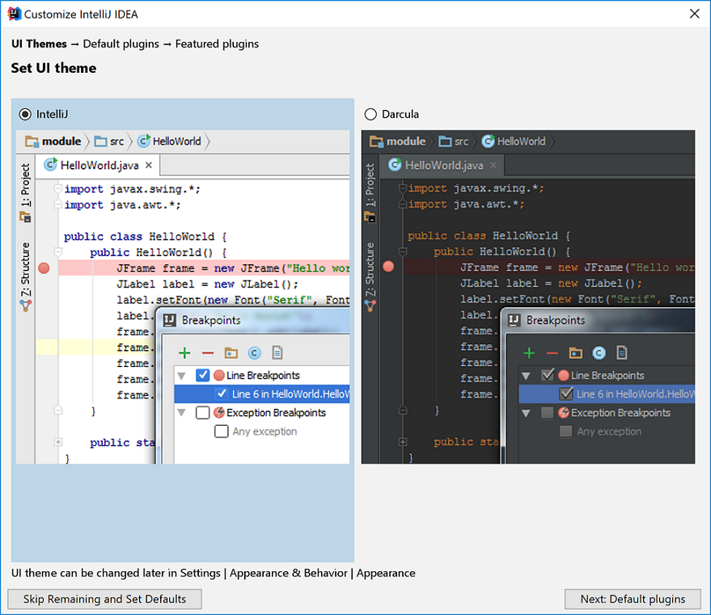

Objectives
Processing · drawing basic shapes · verify IntelliJ setup
Installing the Module Software
For this module, we need the following software packages:
- Processing Development Environment (PDE).
- Java
- IntelliJ
If you have these installed on your computer, you can move onto the next step.
If you didn't get a chance to install the required software, please watch the video previously sent to you and follow the instructions for the installation.
Alternatively, if you are familiar with installing software, you can download and install the latest version of the resources from here:
- https://processing.org/download/
- https://java.com/en/download/
- https://www.jetbrains.com/idea/download/
If you require unzipping software, 7zip is a good choice: http://www.7-zip.org/ (or Keka for Mac http://www.kekaosx.com/en/)
Verifying IntelliJ Installation
- We will start using IntelliJ in week 6/7.
- The purpose of this step is to verify that IntelliJ installed correctly.
Launch IntelliJ
Locate your IntelliJ application and start it.
A small window might appear asking you if you want to import settings...you don't need to import any settings.
If this is your first time launching IntelliJ, you will be presented with this customising window:

Click on the button to Skip Remaining and Set Defaults.
Creating your first Java Program
Click Create New Project.

Something similar to this window should appear:
If your installation says that No SDK exists for the Project SDK (as ours does above), click on the New.. button and locate the version of Java you previously downloaded, for example:
Now that we have a valid Project SDK, click the Next button:
Check the Create project from template box and select the Java Hello World project. Click the Next button.
Rename the project to HelloWorld and click Finish.
Close the Tip window when it appears.
Below, we can see our first project has been created and it contains a Main.java file with Java code in it.
Running your first Java Program
This program, when run, will print Hello World! into the console window. At the moment, we are not concerned with the Java code written here, we are just checking that your installtion of IntelliJ is working properly. We will cover the code in later labs.
To run the program, click the run button.
Hello World! should be printed to the console:
If you are not getting this result, you should flag this to your instructor who can help resolve the issue.
Once you have Hello World! printed to your console, you can exit the IntelliJ IDE.
Opening the PDE (Processing Development Environment)
Go to the directory/folder where you installed your processing app.
You should see a list of files and folders similiar to the image below:

Double click in the processing application (highlighted by the red rectangle).
The PDE (Processing Development Environment) should launch.

Setting your Sketchbook location
As you work through the exercises in this course, you will create many new files. These files are called Sketchbooks.
It is important that you pick a convenient location on your computer to save these sketchbook files to. The following steps show you how to do this.
Updating your Sketchbook location
- In Processing, from the File menu (Processing menu on the Mac), select the Preferences menu item.
- When the following window appears, enter a convenient folder location (or keep the existing one if it is suitable for you).
The Sketchbook location
- All your work can now be accessed easily by selecting Open Recent from the File menu. An example of previous Sketchbook work could look like this:
Drawing Simple Shapes
- We will use the following built-in functions to draw simple shapes:
- rect()
- line()
- ellipse()
Drawing Rectangles
- The syntax of the rect function is:
rect(x, y, w, h)
x = x-coordinate of the upper left corner of the rectangle
y = y-coordinate of the upper left corner of the rectangle
w = width of the rectangle
h = height of the rectangle- Note that, in computing, the coordinates start in the top left hand corner i.e. (0,0) is in the top left of the screen. In the following picture, you can see the coordinates of the rectangle (1,2) along with its width (4) and height (3).

- Enter the following code in your sketchbook:
rect(20,30,50,30);- Run the code, by clicking on the play button (highlighted in red in the screen shot below):

- The following window should appear with a rectangle that:
- starts at the (x,y) coordinates (20,30) [measured in pixels]
- has a width of 50 pixels
- has a height of 30 pixels

Drawing Squares
Using the rect() function, you can draw squares. Just set the width and height to the same number of pixels.
Below the code you wrote previously, try drawing a square that has starts at the (x,y) coordinates of (40,5) and has a length of 20.
Run the code. Did a square appear?

Drawing Simple Shapes(contd.)
- Using rect(), line() and ellipse().
Drawing Lines
- The syntax of the line function is:
line(x1, y1, x2, y2)
x1 = x-coordinate of first point
y1 = y-coordinate of first point
x2 = x-coordinate of second point
y2 = y-coordinate of second point- In the following picture, you can see an example of a line.

- Enter the following code in your open sketchbook:
line(5,30,20,90);- When you run the code, you should see the following line that starts at (5,30) and ends at (20,90):

Drawing Simple Shapes(contd.)
- Using rect(), line() and ellipse().
Drawing Ellipses
For our purposes here, we will define an ellipse as a basic oval shape.
The syntax of the ellipse function is:
ellipse(x, y, w, h)
x = x-coordinate at the centre of the ellipse
y = y-coordinate at the centre of the ellipse
w = width of the ellipse
h = height of the ellipse- In the following picture, you can see an example of an ellipse.

- Enter the following code in your open sketchbook:
ellipse(85,50,20,60);- When you run the code, you should see the following ellipse whose centre is (85,50) and is 20 pixels wide and 90 high.

Drawing Circles
Using the ellipse() function, you can draw circles. Just set the width and height to the same number of pixels.
Try drawing a cicle that has the coordinates (50,80) at its centre and has a diameter of 15 pixels.
Run the code. Did a circle appear?

Changing the look of the display window
- You should have the following code in your open sketchbook:
rect(20,30,50,30);
rect(40,5,20,20);
line(5,30,20,90);
ellipse(85,50,20,60);
ellipse(50,80,15,15);- When it runs, you should have something that looks like this:
- We can see that the available space in the window is at a minimum and the window is quite small. There background is also a default light grey colour. We will make changes to this code to make the window larger and change the colour.
size() function
The size() function sets the size of the display window in pixels. It has to be the first line of code in your sketchbook (there is an exception to this that we will cover later).
The syntax of the size function is:
size(w, h)
w = width of the ellipse
h = height of the ellipseIf the size function is not called, the window will be set to a default size of 100x100 pixels.
Enter the following code in your open sketchbook:
size(400,300);- Run your code; your window should now be larger.
background() function
The background() function sets the background colour of the display window.
The syntax of the Grayscale background function is:
background(g)
g = gray colour (a number between 0 and 255 inclusive)
0 is black and 255 is white. All numbers in between vary in shades of gray.In your open sketchbook (after the size() function), type in the background() function, passing a value between 0 and 255 as your colour parameter.
For example, we chose a dark-ish grey:
background(100);
Saving your work
It is a good idea to save your work as you progress through your labs. From the File menu (Processing on the Mac), select Save As... The folder location you chose earlier for storing your sketches should be displayed. Save your sketch as something like lab00.
Exercises
- These exercises are based on the functions we covered in the previous steps in this lab.
- For each exercise listed below, create a new sketchbook.
Exercise 1
At the end of step07, your animation looked like this:
Make the necessary changes so your animation now looks like this image:

Exercise 2
- Draw a stick man as shown in the picture below:
Exercise 3
- Design your own picture, making sure to use combinations of Circles, Ovals, Squares, Rectanges and Lines.
Solutions
The solutions for this lab can be found here.
If you require unzipping software, 7zip is a good choice: http://www.7-zip.org/ (or Keka for Mac http://www.kekaosx.com/en/)
After unzipping the solutions, it might be a good idea to copy the three folders to your sketchbook folder. From Processing, you could then use File, followed by Sketchbook to easily open them.